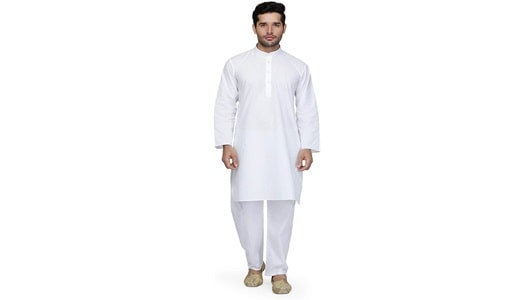

Bengali men prefer panjabi dresses, similar to the north’s kurta and plain dhoti. The only difference is the fabric used, which is Muga Silk, Tusshar silk, and cotton silk. In modern times, Panjabi dresses are paired with jeans and trousers. Garad silk kurtas come in beige, cream, and honeycolour shades.